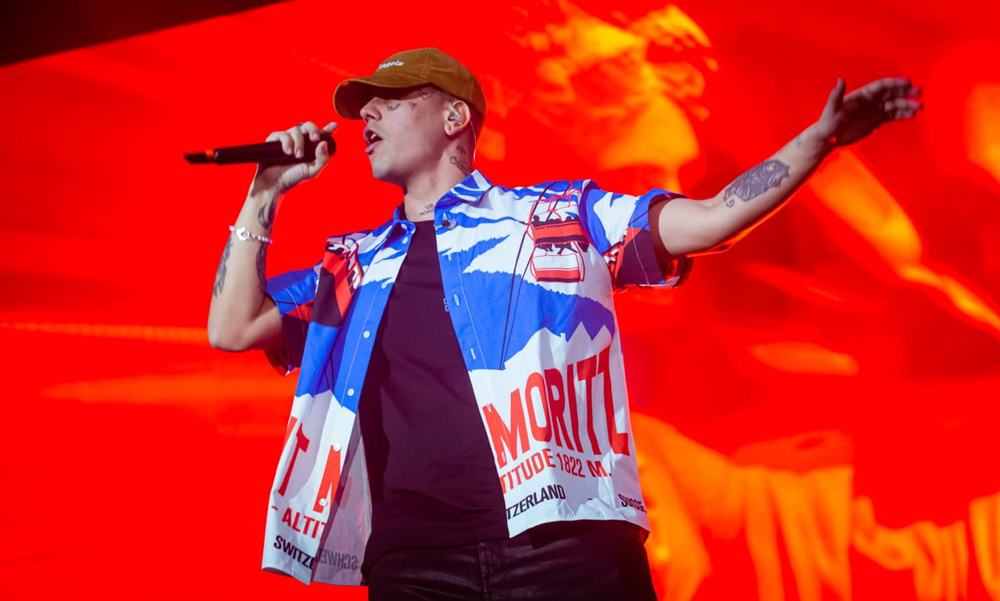

Duki
Mauro Ezequiel Lombardo Quiroga (Almagro, Buenos Aires, 24 de junio de 1996), conocido
artísticamente como Duki, es un rapero y compositor argentino.1 Es reconocido por haber popularizado
el
género del trap en la música mainstream hispanohablante a fines de la década de los 2010, y por su
utilización del autotune en sus vocales y sus ganchos melódicos en su estilo de rapeo.
Lombardo surgió de sus participaciones en las batallas de rap, en especial de la competencia El Quinto
Escalón, la cual al volverse un fenómeno viral en YouTube

- 
Khea
Nacido en Mar del Plata, el 13 de abril de 2000, Ivo Alfredo Thomas Serue, más conocido como KHEA, es un
cantante y compositor argentino referente del Trap.
Empezó como muchos otros jóvenes de argentina, forjando su carrera en las calles, creciendo para darse una
identidad. Los primeros pasos de Khea en la industria musical se dieron en diversos festivales de música
donde mostró su trabajo como freestyler.
Después de participar en algunas batallas de rap en las plazas de Buenos Aires, se unió a Mueva Records. Con
ese sello el 20 de noviembre de 2017 lanzó “Loca” su hit principal.
C.r.o
Tomás Manuel Campos (Plottier, 11 de septiembre de 1998), más conocido por su nombre artístico C.R.O, es un
cantante y rapero argentino cuya música abarca géneros como el rap, el trap, el boom bap, el rock, el pop,
la música Electrónica y el reguetón.
Ha registrado colaboraciones con artistas como Duki, Lil Xan, Neo Pistea, Kevin Roldán, FMK, Bizarrap, Cruz
Cafuné y Recycled J, y ha participado en eventos como Buenos Aires Trap, Madrid Salvaje, Holika, Arenal
Sound, Cosquín Rock y el Festival Lollapalooza Argentina.